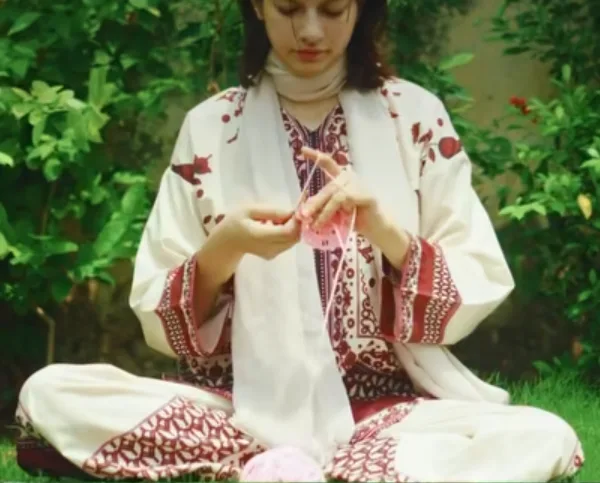
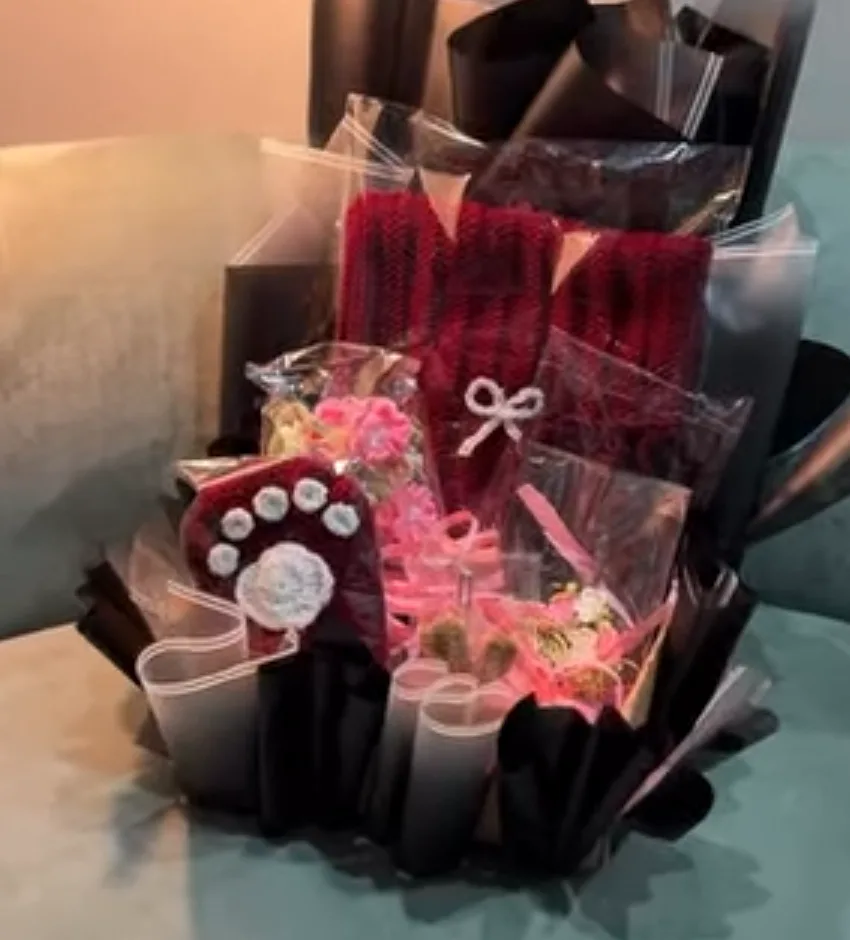

our story
Flowers made to be kept.
URB crochets flowers: roses, lilies, peonies, sunflowers and forget-me-nots, stitched in yarn and arranged into bouquets that never wilt. Plushies, cardigans and little keepsakes too.
Every design has a name, so a Pink Whimsy or a Blue Hour is something you can ask for again. Because each one is made by hand, stock is small. We also sell on the Pluto marketplace, where the same bouquets are listed.
You choose the delivery day, and you can add a card message at checkout.

what we make
One craft, many forms
wrapped with care
Layer by layer
Gift baskets are wrapped in layers of paper and ribbon, then finished with a bow. Each parcel leaves in the urb box.
How it arrives
our promise
Three things we keep
Every stem is crocheted, not bought in.
No water, no wilting, no waste.
If a design shows one left, there is one left.